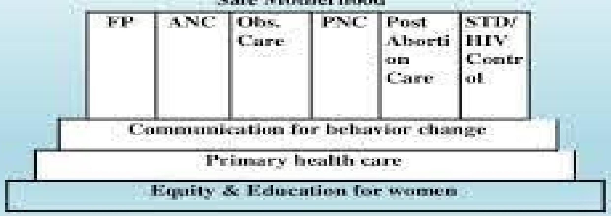

INTRODUCTION TO REPRODUCTIVE HEALTH AND MIDWIFERY
BY J SEREMWO
Introductory Images
Objectives
By the end of the lesson the learner should be able to;
- To define reproductive health/midwifery
- State the historical development of RH/MIDWIFERY
- Describe the elements of safe motherhood
- Explain the millennium development goals and sustainable development goals on matter related to health.
INTRODUCTION
Reproductive Health:
This is a state of complete physical, mental and social well-being, and not merely the absence of ;
- Disease or infirmity, in all matters
- Relating to the reproductive system,
- Its functions and processes.
Reproductive health
- Addresses the human sexuality and reproductive processes,
- Functions and system at all stages of life and implies that people are able to have "a responsible, satisfying and safe sex life and that they have the capability to reproduce and the freedom to decide if, when and how often to do so."
- Men and women have the right to be informed and have access to;
- safe, effective, affordable and
- acceptable methods of their choice for the regulation of fertility
- Reproductive health is life-long,
- beginning even before women and men attain sexual maturity and continuing beyond a woman's childbearing years.
- During the 1960s, UNITED NATIONS POPULATION FUND(UNFPA) established with a mandate to raise awareness about population "problems" and to assist developing countries in Reproductive Health.
- "standing room only",
- "population booms,
- demographic entrapment" and
- scarcity of food, water and renewable resources.
- In 1972, WHO established the Special Program of Research, Development and Research Training in Human Reproduction (HRP), whose mandate was;
- Focused on research into the development of new and improved methods of fertility regulation and
- Issues of safety and efficacy of existing methods.
- Population policies became widespread in developing countries during the 1970s and 1980s
- Were supported by UN Reproductive Health agencies and a variety of NGOs
- Example is International planned parenthood federation (IPPF)
INTERNATIONAL HUMAN RIGHT
- In 1990s international human rights treaties in terms of women's health in general and reproductive health was accepted.
- Right of couples and individuals to decide freely and responsibly the number and spacing of children and to have the information and means to do so;
- Right to attain the highest standard of sexual and reproductive health; and,
- The right to make decisions free of discrimination, coercion or violence.
Subsequent articulations of reproductive rights;
- Maternal death is defined as a "social injustice"
- Governments to address the causes of poor maternal health through their political, health and legal systems.
KENYA
- During a Kenyan population census conducted in the late 1950's, the fertility and growth rates of Kenyans were found to be high.
- In response, the government adopted Family Planning (FP) as an important component of socioeconomic development in the 1960's.
- As early as 1965, when fertility control was a primary focus, the Government of Kenya (G.o.K) recognised population planning and family planning as part of the National Planning Strategies of Sessional Paper No. 10 of 1965.
- In 1967, the Family Planning Programme was established (G.o.K/M.o.H, 1998).
- Since then, the fertility rate, which was $7.9\%$ in 1979, has decreased to $5.45\%$ in 1993, and the population growth rate has reduced from $3.8\%$ in 1979 to $3.4\%$ in 1993 (CBS, 1995).
- The population of Kenya was 15.3 million in 1979.
- By 1998, it has doubled to approximately 30 million (NCPD, 1998).
- Meanwhile, the growth of the economy has not kept pace with the growth of the population.
- If the population growth rate is higher than the economic growth rate, it creates a burden on available land, health facilities, educational resources and the job market.
- These factors often impact more on mothers and children, whose mortality and morbidity rates are high, mainly due to complications associated with pregnancy and childbirth and HIV/AIDS prevalence.
- In 1974, further evaluation established that the child health services were running parallel to those of family planning and antenatal care.
- This arrangement was viewed as inefficient.
- As a result, these services were integrated to offer a more consolidated package.
- Maternal/Child Health Care and Family Planning (MCH/FP) Programme was established.
Better health for woman/children
- In 1987, the Safe Motherhood Initiative (SMI) was launched at the Conference on Better Health for Women and Children, held in Nairobi, Kenya.
- The Government of Kenya endorsed the Plan of Action to reduce maternal mortality and morbidity rate, which was developed at that conference.
- At the International Conference on Population and Development (ICPD) 1994, 179 countries endorsed a Reproductive Health Agenda.
- Programme endorsed a shift in development strategies, urging member countries to review and revise health policies to focus on meeting the needs of an individual, and on the provision of basic as well as comprehensive and quality RH services.
- The comprehensive concept of RH is based on the World Health Organisation (WHO) definition of RH, which recognised the fact that RH is closely interrelated with policies to empower women, strengthen families, stabilise population growth, and eradicate poverty.
- In response to ICPD recommendations, the concept of integrated RH services was developed and launched to meet the revised policy on RH care.
- Integrated RH creates demand for, and ensures provision of RH services, defined for each level of the health care system, everyday, during the same visit, under one roof, and where possible by the same provider 'the supermarket approach'.
- Kenya is signatory to the Cairo Declaration of 1994, which marked a turning point in the field of population and health development, not only for Kenya but the whole world.
- As a response to the 1994 ICPD in Cairo, the Kenya government developed and launched the Health Policy Framework Paper of 1994.
- This policy document provides the blueprint for strategies for the development and management of health services in this country.
- A notable policy document is the National Reproductive Health Strategic Plan of 1996, covering the period 1997 2010.
- This document guides the implementation of a comprehensive and integrated RH programme in Kenya for the next decade.
- In order to operationalise the 1997-2010 Strategic Plan, the Ministry of Health (M.o.H), In collaboration with various stakeholders, designed and launched a series of policy documents to spearhead the long term reform process.
Pillars of Safe Motherhood
- Safe motherhood is the concept or initiatives to ensure that women receive high quality care in order to achieve the optimum level of health of mother and infant.
- Safe motherhood aims at improving maternal and child health and eliminating the probable risk that can occur.
Why safe motherhood?
- In 2007 there were at least 3.2 million stillborn babies, 4 million neonatal deaths and more than half a million maternal deaths globally. - Every day in 2015, about 830 women died due to complications of pregnancy and child birth. Most of these could have been prevented.
- Maternal and neonatal deaths are still high and unacceptable.
- Over half of maternal deaths are due to preventable or treatable conditions.
- The maternal morbidity and mortality can be reduced through preventive and promotive activities and by addressing avoidable factors that cause death, which are included in safe motherhood initiatives.
- For newborns, most deaths are due to premature birth, infections and complications of asphyxia, again all preventable or treatable conditions.
Pillars/Principles of safe motherhood
-
Family Planning:
FP is an important component of safe motherhood
It is necessary to ensure that individuals and couples have adequate information and services regarding FP
FP is also necessary to plan the timing, number of children, spacing between pregnancies, delay pregnancy, etc.
-
Antenatal Care (ANC)
ANC checkup is necessary to detect complications early and treat them as soon as possible
It is also essential to provide pregnant women with;
- vitamin supplements, iron tablets
- and vaccinations so that they can have a healthy and strong pregnancy.
-
Obstetric Care
Obstetric care ensures that all the deliveries are done by the skill birth attendants or the medical professionals.
Birth attendants should have the knowledge, skills, and equipment to perform a clean and safe delivery.
Moreover, emergency care for high-risk pregnancies and complications are made available to all women who need it.
-
Postnatal Care (PNC)
It is necessary to ensure that postpartum care is provided to the mother and baby
It includes counselling mothers about child handling, exclusive breast feeding, etc.
Moreover, PNC also comprises of providing awareness regarding the FP, and managing the danger signs and symptoms seen in both mother and child.
-
Post abortion Care
- It is necessary to prevent complications of abortion
- It also helps to identify/detect if there are any complications of abortion
- Useful to refer other reproductive health problems when necessary
- Also provides counselling and awareness about different family planning methods
-
STD/HIV/AIDS Control
- HIV screening is done to prevent, and manage HIV and AIDS transmission to the baby
- To assess risk for future infection
- To provide voluntary counseling and testing
- To expand services to address mother to child transmission.
Pillars/Principles of safe motherhood:
"SIX PHLARS" OF SAFE MOTHERHOOD
COMPONENTS OF RH
- Safe motherhood and child survival initiatives
- Family planning unsatisfied needs including male involvement
- Management of STI/HIV/AIDS
- Promotion of adolescent and youth health
- Gender and reproductive health rights including male involvement
- Screening and management of cancer and other reproductive health issues
- Prevention and appropriate management of infertility
- Care of the elderly
Essentials of safe motherhood
Millennium Development Goals (MDGs)
- The United Nations Millennium Development Goals are eight goals that all 191 UN member states have agreed to try to achieve by the year 2015.
- The United Nations Millennium Declaration, signed in September 2000 commits world leaders to combat poverty, hunger, disease, illiteracy, environmental degradation, and discrimination against women.
The Eight Millennium Development Goals
- To eradicate extreme poverty and hunger;
- To achieve universal primary education;
- To promote gender equality and empower women;
- To reduce child mortality;
- To improve maternal health;
- To combat HIV/AIDS, malaria, and other diseases;
- To ensure environmental sustainability; and
- To develop a global partnership for development
The MDGs are inter-dependent
- All the MDG influence health and health influences all the MDGs.
- For example, better health enables children to learn and adults to earn.
- Gender equality is essential to the achievement of better health.
- Reducing poverty, hunger and environmental degradation positively influences, but also depends on, better health.
The 2030 Agenda for Sustainable Development
- Provides a shared blueprint for peace and prosperity for people and the planet, now and into the future.
- Adopted by all United Nations Member States in 2015,
- At its heart are the 17 Sustainable Development Goals (SDGs), which are an urgent call for action by all countries
SDGS
- Developed and developing - in a global partnership.
- They recognize that ending poverty and other deprivations must go hand-in-hand with strategies that improve health and education,
- Reduce inequality, and spur economic growth all while tackling climate change and working to preserve our oceans and forests.
Sustainable development goals
- No poverty
- Zero hunger
- Good health and wellbeing
- Quality education
- Gender equality
- Clean water and sanitation
- Affordable and clean energy
- Decent work and economic growth
- Industry, innovation and infrastructure
- Reduced inequalities
- Sustainable cities and communities
- Responsible consumption and production
- Climate action
- Life below water
- Life on land
- Peace, justice and strong institutions
- Partnership for the goals
Maternal & Newborn Health Care in Kenya
- Although more than 90 percent of Kenyan women receive antenatal care from a medical professional, - Fewer than half of all births take place in a health facility, according to the 2008-2009 Kenya Demographic Health Survey
- The prevalence of home births plays a large role in the country's high maternal death rate-which has been rising in recent years
- These high rates of maternal deaths are attributed to well-known and preventable causes.
- They include obstructed labour, complications of unsafe abortion, infections, haemorrhage, and high blood pressure.
- Most of these deaths could be avoided if the mother is managed at a health facility by a qualified health professional.
- During antenatal care visits to health facilities, pregnant women are screened for complications and given advice on a range of issues, including place of delivery and referral.
- However, the majority of women (56 percent) give birth at home.
- Why then do so many women choose to deliver at home or in the community?
- "Their reasons include lack of transport,
- fears about negative attitudes of health workers,
- long distances to health facilities,
- cultural preferences, and charges for services which are beyond what most women can afford,
- On June 1, 2013, President Uhuru Kenyatta announced that the Jubilee Government had abolished maternity charges in public health facilities.
- Scrapping of the fees would help all expectant mothers access maternal care and would also help reduce maternal deaths.
BEYOND ZERO
- Launched in January 2014 by Her Excellency Margaret Kenyatta the First Lady of the Republic of Kenya,
- Beyond Zero was inspired by the realization and knowledge that maternal and children deaths are preventable.
- Beyond Zero is a call to action for policy prioritization and formulation, increased resource allocation, improved service delivery and better individual health seeking behaviors and practices.
- Fifteen women die every day due to pregnancy related complications in Kenya and 20% of all deaths among mothers in the country are AIDS-related.
- In order to improve maternal and child health outcomes in the country, the First Lady of Kenya, Margaret Kenyatta launched the 'Beyond Zero Campaign' .
- Also aims to accelerate the implementation of the national plan towards the elimination of new HIV infections among children.
- Through this high level advocacy platform, the First Lady leverages on;
- the convening power to bring to focus key challenges facing Kenyans and
- build strategic partnerships that will address these challenges.
- Beyond Zero is a charitable organization.
- According to the Commission on Information and Accountability for Women and Children’s Health 2013 Update Report,
- In 2012 alone, more than 100000 children died before their fifth birthday-largely due to preventable causes.
- 13000 new HIV infections occurred among children and 62% of children living with HIV did not access lifesaving antiretroviral drugs.
- The 'Beyond Zero campaign' is part of the initiatives outlined in the Strategic Framework for the engagement of the First Lady in HIV control and promotion of maternal, newborn and child health in Kenya that was unveiled on World AIDS Day 2013.
- The framework aims to galvanise high-level leadership in ending new HIV infections among children and reducing HIV related deaths among women and children in Kenya.
Strengthening health systems for service equity
- Recognizing the devolved structure of health services and systems,
- Beyond Zero has donated forty seven fully kitted mobile clinics to forty seven county governments to strengthen the existing outreach programs and referral systems.
- The mobile clinic design and specifications were developed in conjunction with the Ministry of Health through wide consultations whilst understanding the specifities of county profiles.
- The mobile clinic partly addresses access to health care services for hard to reach areas;
- informal settlements - focusing on urban and peri-urban areas;
- and at risk populations.
- The sustainability of the mobile clinics is ensured through a formal handing over to the County Government and the signing of MOU between the County Government, Ministry of Health and Beyond
- This process demonstrates transfer of ownership from Beyond Zero to County Governments.
- In addition, each mobile clinic receives a master facility number to enable the County Government allocate health workers, purchase drugs and supplies, allocate budget and report on the national District Health Information System.
Contribution to increasing service provision through the mobile clinics
- The forty-seven fully kitted mobile clinics have provided almost half a million integrated services.
- The services include antenatal and postnatal services;
- HIV testing, treatment and care;
- Immunization, basic treatment for common ailments, reproductive health cancers screening and treatment (where applicable).
- Immunization of children is in demand in the Beyond Zero mobile clinics.
The key advocacy messages of Beyond Zero ;
- regular cancer screening,
- knowing one’s HIV status,
- taking your antiretroviral drugs if one is HIV positive,
- exclusively breastfeeding a baby up to six months,
- ensuring full immunization of children - have reached over fourteen (14) million Kenyans.
Promotion of Beyond Zero Initiative outside national borders
- Beyond Zero contributes to providing a path towards Kenya's attainment of its development goals.
- This path demonstrates the potential of a leadership model for promoting community empowerment for preventative and curative healthcare.
- This model has attracted interest beyond Kenya’s borders and increased donations of health care equipment for facilities in Kenya.
Galvanizing local philanthropists
- Kenya is known world-wide for her sterling performance in athletics and the Founder of the Initiative determined that "running" would raise the profile of maternal and child health challenges.
- Increasing in Kenya, marathons bring together people from all walks of life who identify with a course whilst exercising for fun..
- The active citizen participation has grown over the three editions of the First Lady's Half Marathon and has raised nearly KSH 600 million (US\$ Six Million) including in-kind donations.
- In 2016, the First Lady's Half Marathon saw the inclusion of a new category for people and/or children with special abilities
The strategic framework focuses on five key areas:
- Accelerating HIV programmes,
- Influencing investment in high impact activities to promote maternal and child health and HIV control,
- Mobilizing men as clients, partners and agents of change,
- Involving communities to address barriers to accessing HIV, maternal and child health services and
- Providing leadership, accountability and recognition to accelerate the attainment of HIV, maternal and child health targets
HISTORY OF MIDWIFERY
- Midwifery is as old as the history of human species.
- Archeological evidence of woman demonstrates the existence of midwifery in 5000 BC.
- There are references to the midwives in the old testament .
- King of Egypt spoke to midwives who helped Hebrew women when they gave birth.
- They were the first midwives found in literature". Exodus 1:15-22 (Shiphrah and Puah)
- Genesis 35:17 "and it came to pass, when she was in hard labour,
- That the midwife said unto her ,fear not Rachel, it is another Boy
- Hippocrates (460BC),the father of scientific medicine organized trained and supervised midwives.
- He believed that the fetus has to fight its way out of the womb.
- William Havey (1578-1657),the father of British midwifery ,wrote the first English textbook on midwifery.
- He described the fetal circulation and the placenta.
- Fielding Ould (1710-1789) described the normal mechanism of labour and performed the first episiotomy.
- Florence Nightingale in 1862 organised a small training school with king's college Hospital where she conducted training for midwives
MIDWIFERY IN KENYA
- Modern Midwifery was started by Missionaries in the late 1940s as a certificate program.
- In1949 an act of parliament to take care of the required standards of midwifery.
- Later a diploma program was started in the 1950s when the nursing and midwives council of Kenya was formed.
- Some schools offered Nursing programs or midwifery programs as stand alone.
- During independence in 1963 on wards the training colleges for the government were now mandated with these training programs.
- The stand alone programs put in place were certificate in
- Nursing- 2 years and half program,
- Midwifery - 2 years,
- Health visiting 1 year certificate
- Diploma programs were also started for the same in private, faith based and Government Hospitals
- These programs were regulated initially by minister of Health then later by the Nursing, Midwives and Health visitors Council.
- 1963 Oct. Pumwani maternity - (lady Grigg maternity-Nairobi) started but closed 1965 for lack of applicants.
- 1965 KRM basic Program commenced in Kenya School of Nursing (current KMTC)
- 1967 post basic Midwifery program (KRM) Commenced -after 3½ years KRN Program;
- 1972 - Mater Misericordiae Mission hospital commenced diploma in Midwifery (KRM -PB)
- 1973 - Pumwani Maternity Hospital restarted the Midwifery program (both basic & post basic Enrolled Midwife/Registered Midwife- (KEM/KRM)
- By 1982 a combined curriculum was ready for the Diploma program (KRCHN).
- A few schools piloted this also-three years and half program.
- 1987 programme started in Mombasa m.t.c
- In late 1980s a Mission university started a degree program in Nursing following the Combined mode (Baraton University);
- Slowly and surely the stand alone programs for midwifery, nursing and health visiting were phased out in the country by the mid ‘90s.
- 1992 Nairobi University started a degree combined program mode (BScN).
- Other universities started the above program e.g Kenyatta,Moi(Eldoret),Jkuat, Pwani universities
COMMON TERMINOLOGIES IN RH
- Abortion; an expulsion of products of conception before 24 weeks gestation from the uterus through the birth canal
- Adolescents; persons aged between 10 and 19 years
- Adolescent -friendly services; sexual and Reproductive Health services delivered in ways responsive to specific needs, vulnerabilities and desires of the adolescents
- Antenatal care also known as prenatal care; care given to a woman from the time of conception to the onset of labour
- Child; an individual who has not attained the age of 18 years
- Fetus; an unborn offspring from the embryo stage (end of 8th week after conception) until birth
- Gravida; number of pregnancies
- Gynaecology; is the medical practice dealing with the health of the female reproductive systems(vagina, uterus and ovaries) and the breasts. Outside medicine, the term means "the science of women
- Midwifery; a health science/profession that deals with pregnancy, childbirth and the postpartum period including care of the newborn, besides sexual and RH of women throughout their lives of disease or infirmity
- Midwife; a trained health professional who helps healthy women during pregnancy, labour, delivery and after the birth of their babies. Being with a woman-applies to both males and females
- Obstetrics; a branch of medicine and surgery concerned with childbirth and care of women giving birth. A field of study concentrated on pregnancy, childbirth and postpartum period.
- Parity; number of deliveries after 20 weeks gestation
- Pregnancy; the period from conception to birth of a baby
- Puerperium; a time from delivery of the placenta throughout the first few weeks of delivery (6-8 weeks)
- Reproductive health; a state of complete physical, mental and social well-being and not merely the absence of diseases or infirmity in all matters relating to reproductive system, its functions and processes.